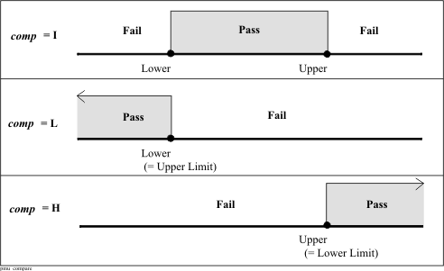
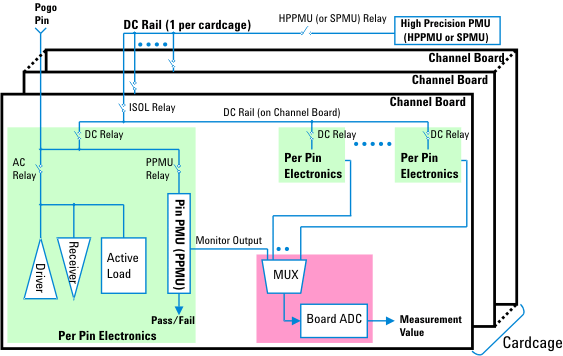

PMU_IFVM
The PMU_IFVM API accesses a data container for executing an I-force V-measure DC test with Pin PMU (PPMU).
This API can perform the following:
- Create a set of measurement conditions for a DC test, as a DC set.
- Execute the DC test using the measurement conditions.
- Retrieve the result of the DC test.Note Recommend only using this API for MCx-PMU.
This API is defined in the header file /opt/hp93000/soc/prod_com/include/MAPI/PmuIFVM.h.
Class definition
Constructor
PMU_IFVM(STRING pinlist,TM::PMU_TYPE type = TM::PPMU);
Member Functions:
PMU_IFVM& preAction(STRING preAct = "NONE"); PMU_IFVM& min_voltage(DOUBLE min); PMU_IFVM& max_voltage(DOUBLE max); PMU_IFVM& limits(STRING testname); PMU_IFVM& limits(LIMIT limit); PMU_IFVM& compare(STRING comp = "I"); PMU_IFVM& iForce(DOUBLE current); PMU_IFVM& vClamp(DOUBLE vclamp); PMU_IFVM& mode(STRING mode = "NR"); PMU_IFVM& settling(DOUBLE time = 0); PMU_IFVM& iRange(STRING range); PMU_IFVM& iRange(DOUBLE range); PMU_IFVM& preCharge(DOUBLE prec); void execute(TM::DCTEST_MODE mode = TM::GPF); DOUBLE getMin() const; DOUBLE getMax() const; const STRING getCompare() const; DOUBLE getIForce() const; DOUBLE getVClamp() const; const STRING getMode() const; DOUBLE getSettling() const; const STRING getIRange() const; DOUBLE getPrecharge () const; Boolean getPassFail(); Boolean getPassFail(STRING pin); DOUBLE getValue(STRING pin);
Constructor
PMU_IFVM()
PMU_IFVM(STRING pinlist, TM::PMU_TYPE type = TM::PPMU);
This constructor defines a DC set which is a set of measurement conditions for I-force V-measure test.
You cannot explicitly create any class object with a user-defined name.
pinlist |
Digital pin name or pin group name to be used for the measurement. The valid pin types are i, o and io for the using the PPMU. You can specify multiple pins and pin groups by separating with a comma. "@" specifies all the defined digital channel pins. |
type |
PMU type to be used in the DC test. TM::PPMU - (Default) Pin-PMU for digital channel pins. |
Member functions
preAction()
PMU_IFVM& preAction(STRING preAct = "NONE");
This member function sets the action to be performed prior to the DC measurement.
reAct |
Action type to be performed prior to the DC measurement. The following types are available. |
|
"NONE" |
(Default) This option defines no pre-action. However, this option activates digital primaries specified on the Testsuite dialog prior to the DC measurement. To activate the primaries specified with the PRIMARY_STATUS API or primary analog set, put the FLUSH API prior to this statement. |
|
"FTST" |
Performs a functional test prior to the DC measurement with activating the digital primaries specified in the Testsuite dialog. This option is used to perform a DC measurement with applying a break vector defined in the primary set. To activate the primaries specified with the PRIMARY_STATUS API or primary analog set, put the FLUSH API prior to this statement. You can retrieve the result of the functional test with the GET_FUNCTIONAL_RESULT() API or TEST API. |
|
"NPRM" |
This option defines no pre-action. Also, the primaries are not activated before the DC test. |
|
min_voltage()
PMU_IFVM& min_voltage(DOUBLE min);
This member function sets the lower limit voltage for pass/fail judgment.
The limit value for pass/fail judgment must be set by using this member function or the limits member function. If you use the min_voltage member function, you must also set an upper limit by using the max_voltage member function, unless you have executed the limits member function.
min |
Lower limit voltage in [V] |
max_voltage()
PMU_IFVM& max_voltage (DOUBLE max);
This member function sets the upper limit voltage for pass/fail judgment.
The limit value for pass/fail judgment must be set by using this member function or the limits member function. If you use the max_voltage member function, you must also set a lower limit by using the min_voltage member function, unless you have executed the limits member function.
max |
Upper limit voltage in [V] |
limits()
PMU_IFVM& limits(STRING testname);
PMU_IFVM& limits(LIMIT limit);
This member function sets the lower and upper limit voltages using a test name or LIMIT API's class object.
The limit value for pass/fail judgment must be set by using this member function or the min_voltage and max_voltage member functions.
For using the PPMU, if you use this member function, you may omit either the lower or upper limit value (see compare() for details).
testname |
One of the test names defined for the test suite. (This is not the test suite name.) |
limit |
Class object name of the LIMIT API. |
The available limit voltages are as follows:
PPMU (C200e/C400e): -2 to 7 [V]
compare()
PMU_IFVM& compare(STRING comp = "I");
This member function selects compare mode.
The default setting, "I" is set unless both this member function and the limit() member function are not executed.
comp |
Compare mode to be selected from the following items.
The following figure shows how to judge the result for each compare mode. |

For the PPMU you can also set "L" or "H" if you set the same value to the lower and upper limit.
If you set the limit values by using the limits member function, you can omit executing this compare member function. In this case, compare mode is automatically selected according to which limits (lower, upper, or both) are specified, as shown below.
Limit Values specified in limits member function |
Compare Mode |
|---|---|
Lower Limit = low, Upper Limit = high |
comp is set to "I". |
Lower Limit = low, Upper Limit = no value (Upper Limit is automatically set to low by the limits member function) "No value" is allowed for using the PPMU and/or MCx-PMU. |
comp is set to "H". |
Lower Limit = no value, Upper Limit = high (Lower Limit is automatically set to high by the limits member function) "No value" is allowed for using the PPMU and/or MCx-PMU. |
comp is set to "L" |
iForce()
PMU_IFVM& iForce(DOUBLE current);
This member function sets the force current. This parameter must be specified.
current |
Force current in [A]. The range depends on the PMU type as shown below:
|
mode()
PMU_IFVM& mode(STRING mode = "NR");
This member function specifies the relay control pattern and how to measure multiple pins (serial or parallel measurement).
Generally, you must execute this member function. Otherwise, the measurement will be performed without connecting the PMU to the pogo pin ("NR" mode is set as default).
mode |
Relay control mode. The following modes are available. |
mode |
Serial / Parallel measurement 1) |
AC Relay Control 2) |
PMU Relay Control |
|---|---|---|---|
"NP" |
Parallel |
The AC relay of the specified pin is opened during the measurement to disconnect the driver/comparator /active-load. After the measurement, the AC relay is closed. This mode is for a general DC measurement. |
The PMU is connected to the pogo pin during the measurement. After the measurement, the PMU is disconnected from the pogo pin. After the measurement, the PPMU relay is opened for the PPMU. |
"NS" |
Serial |
||
"TP" |
Parallel |
No change. Use this mode to perform a measurement while keeping the AC relay closed. The AC relay is closed if the CONNECT sequence has been executed. |
|
"TS" |
Serial |
||
"SP" |
Parallel |
No change. Use this mode to perform a continuity test. SP does a single polarity test, and BP does a both-polarities test. The AC relay should be opened by executing the DISCONNECT sequence beforehand. If the tester is in the disconnect state, the DPS pins are 0 V, open, or the DPS high-impedance mode output; the setting is specified by the "offcurr" parameter of the DPS ("act" sets 0 V, "open" sets open, and "min" sets the DPS high-impedance mode output). If the tester is in the disconnect state, during the measurement, the DPS pins are set to 0 V, and the current limit of each DPS is set to the one specified in the level-related primary sets. That is, the DPSs are set to the same settings as for "act". |
|
"BP" |
|||
"NR" |
Parallel for PPMU |
Performs a measurement without relay control. |
|
"SP" and "BP" are mode for performing continuity test, and used only for PPMU.
"SP" is for single polarity test with the polarity specified by the force current parameter (the iForce member function).
"BP" (both polarities) mode executes the continuity test with the specified current polarity, and then executes the second continuity test with the opposite current polarity. The test result of "BP" mode will be pass if the pin passes the test in both polarities.

settling()
PMU_IFVM& settling(DOUBLE time = 0);
This member function sets the settling time which specifies the time interval between the PMU being programmed and the measurement being performed in [ms]. The range is 0 to 2 [sec] and is additional to the system internal settling time. If you Do not specify the settling time, "0" will be used as a default value.
time |
Settling time in [sec]. |
preCharge()
PMU_IFVM& preCharge(DOUBLE prec);
(For PPMU only.) This member function sets the pre-charge voltage before the PMU is connected to the DUT pin. After the PMU is connected to the DUT pin, the PPMU is immediately switched to the current force mode and the specified current is forced at the DUT pin.
For the PPMU, this parameter is optional.
For the MCx-PMU, this parameter is not required (an error occurs if this member function is executed). For the current force in the MCx-PMU, always before the pogo pin is connected to the MCx-PMU, the MCx-PMU output is around 0 V to prevent sudden current flowing through the test device.
The pre-charge voltage parameter prevents sudden current flowing through the DUT when the PPMU is being connected to the DUT and prevents the PPMU (which is set to a current source whose output is open) being connected to the DUT with the maximum voltage.
prec |
Pre-charge voltage in [V]. |
iRange()
PMU_IFVM& iRange(STRING range);
PMU_IFVM& iRange(DOUBLE range);
This member function sets the force current range.
Generally, you do not need to execute this member function because the smallest possible current range is automatically selected according to the specified force current value.
|
range |
Current range to be selected from the following items or specified with DOUBLE type value. If a DOUBLE type value is specified, the smallest possible range is automatically selected from the following ranges. |
|
|---|---|---|
|
|
PPMU |
|
|
IRA |
±10 µA |
|
|
IRB |
±100 µA |
|
|
IRC |
±1 mA |
|
|
IRD |
±40 mA |
|
execute()
void execute(TM::DCTEST_MODE mode = TM::GPF);
This member function downloads the DC set to the hardware and executes the DC test. At the end of the test, the PMU is disconnected from the DUT pin (unless the mode() member function sets "NR" mode for the PPMU).
mode |
Test mode to be selected from the following items. TM::GPF - Executes a Global Pass/Fail test which records a global pass/fail result of all the pins. The result can be retrieved with the getPassFail() member function. Without executing the getPassFail() member function, you may execute the TEST API (TEST(PMU_IFVM("pins")) to make the pass/fail result of the DC test as the pass/fail result of the test suite. TM::PPF - Executes a Per pin Pass/Fail test which records the pass/fail result per pin. The results can be retrieved with the getPassFail(pin) member function. The getPassFail() member function can also be executable. TM::PVAL - Executes a Per pin Value test which records the measured value per pin. The results can be retrieved with the getValue(pin) member function. The getPassFail() or getPassFail(pin) member function are also executable. For the PPMU, when TM::PVAL is set, the board ADC is used to obtain the measurement value. For the PPMU, the getPassFail() or getPassFail(pin) member function or the TEST API (TEST(PMU_IFVM("pins")) always retrieves the result of the PPMU comparison hardware, and the getValue(pin) member function retrieves the measurement value of the board ADC. TM::DCTEST_AUTO - Executes the DC test according to the test suite flags. If the flag Pass value or Fail value is on, the DC test will executes in the same way as the mode TM::PVAL. If the flag Pass value and Fail value are off and the flag Per pin on pass or Per pin on fail is on, the DC test will executes in the same way as the mode TM::PPF. If the flag Pass value and Fail value are off and the flag Per pin on pass and Per pin on fail are off, the DC test will executes in the same way as the mode TM::GPF. |
For using the MCx-PMU, before a DC test is executed by this member function, the four pins of the unit whose MCx-PMU is used in the DC test must be disconnected. If any of the four pins is connected to the core, an error occurs. To disconnect the pins, use the ROUTING_STATUS API.
getMin()
DOUBLE getMin() const;
This member function returns the present setting value of the lower limit voltage for pass/fail in [mV]. The lower limit is set with the min_voltage or limit member function.
There are no parameters in this member function.
getMax()
DOUBLE getMax() const;
This member function returns the present setting value of the upper limit voltage for pass/fail in [mV]. The upper limit is set with the max_voltage or limit member function.
There are no parameters in this member function.
getCompare()
const STRING getCompare() const;
This member function returns the present setting of the compare mode.
There are no parameters in this member function.
getIForce()
DOUBLE getIForce() const;
This member function returns the present setting value of the force current in [µA].
There are no parameters in this member function.
getMode()
const STRING getMode() const;
This member function returns the present setting of the relay control mode which is specified with the mode member function.
There are no parameters in this member function.
getSettling()
DOUBLE getSettling() const;
This member function returns the present setting of the settling time in [ms].
There are no parameters in this member function.
getPrecharge()
DOUBLE getPrecharge() const;
This member function returns the present setting of the pre-charge voltage in [mV].
There are no parameters in this member function.
getPassFail()
Boolean getPassFail();
Boolean getPassFail(STRING pin);
This member function returns a global pass/fail result of all the pins, or a pass/fail result of the specified pin.
Parameters
pin |
Pin name whose pass/fail result will be retrieved. If this parameter is not set, this member function returns TRUE if the all pins passed, or FALSE if any of pins failed. |
Return Value
Returns a Boolean true for pass or false for fail result of the measurement.
getValue()
DOUBLE getValue(STRING pin);
This member function returns a measured value in [mV] for the specified pin.
pin |
Pin name to retrieve the measurement value. |
Example
- For PPMU (/MCx-PMU) and GPF
judgment:
: PMU_IFVM pmuIfvm("PIN1,PIN2"); pmuIfvm.iForce(100 uA).settling(5 ms); pmuIfvm.mode("NP").limits("limit1"); pmuIfvm.execute(); TEST(pmuIfvm); :The PMU_IFVM API defines PIN1 and PIN2 to be used for measurement with the PPMU (and/or MCx-PMU), and the member functions set the force current and settling time. Then the mode member function specifies the relay control mode to "NP". Then the limits member function specifies limits by using the class object name of the LIMIT API, and the execute member function starts the measurement. Then the TEST API judges a pass/fail result of the testsuite from the global pass/fail result of this measurement.
- For PPMU (/MCx-PMU) and PVAL
retrieval:
: DOUBLE rslt1, rslt2; PMU_IFVM("PIN1, PIN2").iForce(100.0 uA). settling(5.0 ms); PMU_IFVM("PIN1, PIN2").limits("limit1"). mode("NP").execute(TM::PVAL); rslt1 = PMU_IFVM("PIN1, PIN2").getValue("PIN1"); rslt2 = PMU_IFVM("PIN1, PIN2").getValue("PIN2"); :The PMU_IFVM API defines PIN1 and PIN2 to be used for measurement with the PPMU (and/or MCx-PMU), and the member functions set the force current and settling time. Then the limits member function specifies limits by using the class object name of the LIMIT API, and the mode member function specifies the relay control mode to "NP", and the execute member function starts the measurement on per pin value test mode. Then the getValue member function gets the per pin measurement value for pin1 and pin2.
Functional changes
- SmarTest 7.1.2: PMU in MCE is supported.